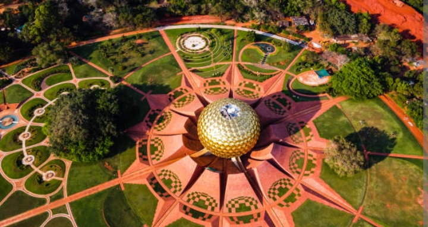

AUROVILLE
Auroville wants to be a universal town where men and women of all countries are able to live in peace
and progressive harmony above all creeds, all politics and all nationalities.
The purpose of Auroville is to realise human unity.

Founded in 1968 by Mirra Alfassa, also known as 'The Mother', Auroville is an experimental township or a universal town.
Designed by famous architect Roger Anger, Auroville is a must-visit attraction
of Pondicherry where people of different nationalities, cultures and beliefs live together in harmony.